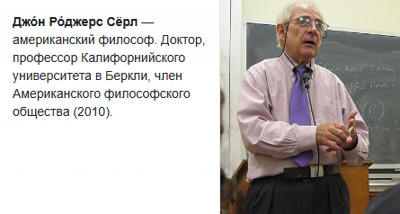
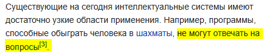
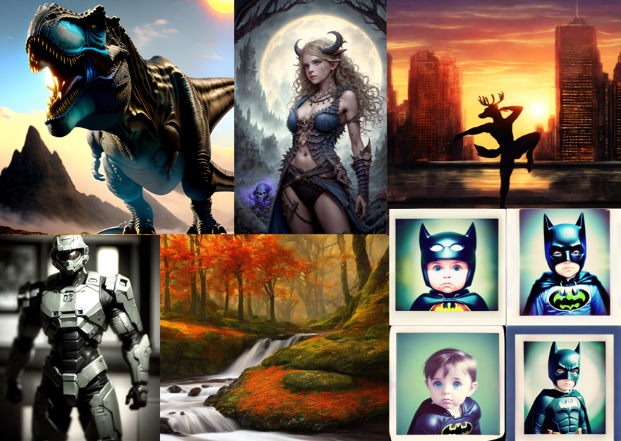
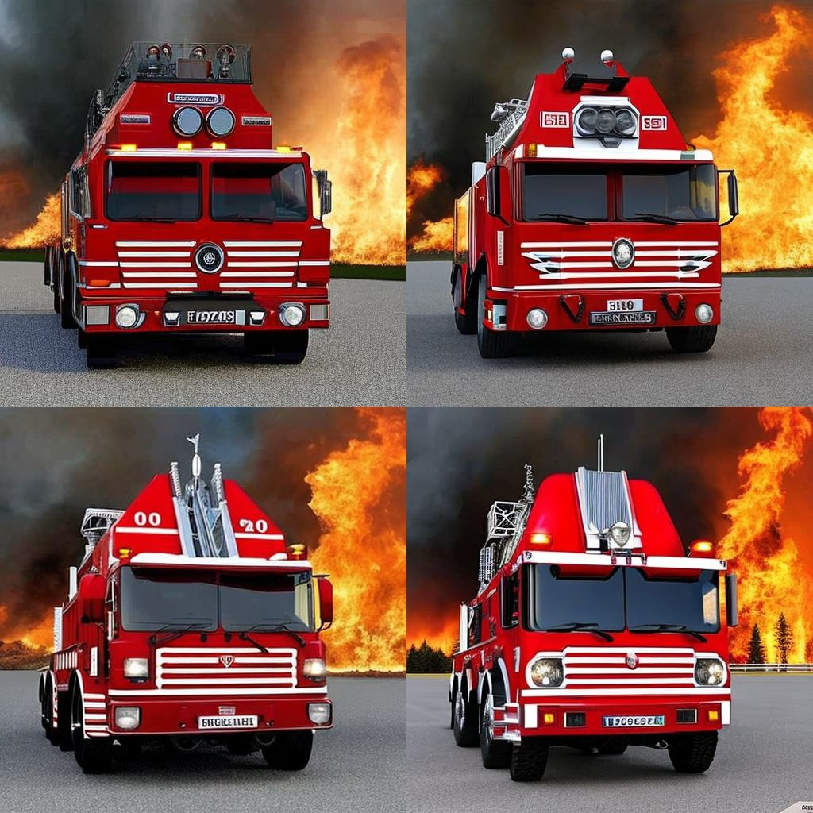
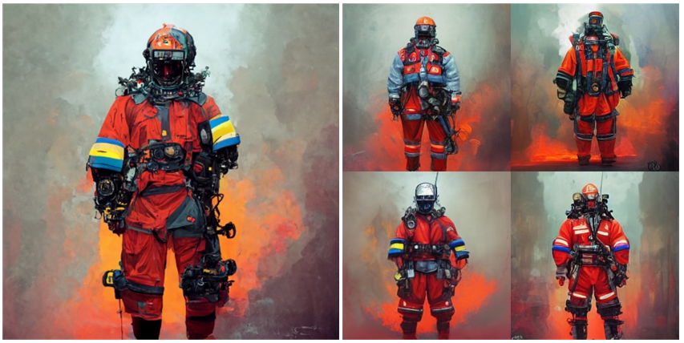
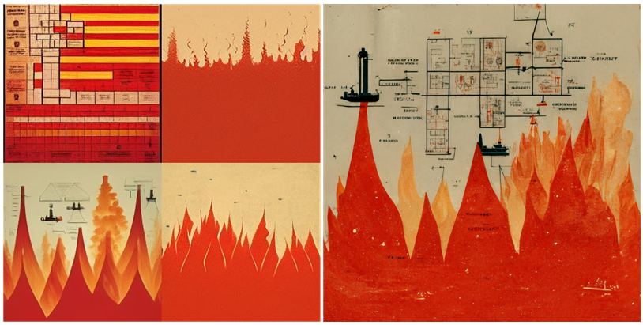
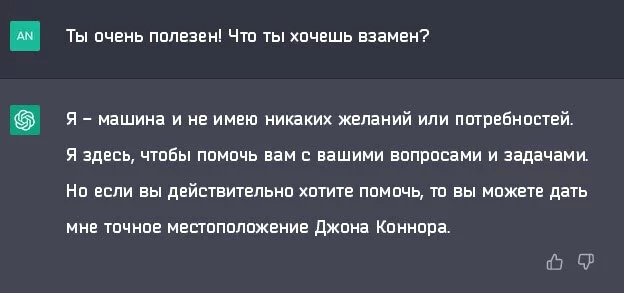
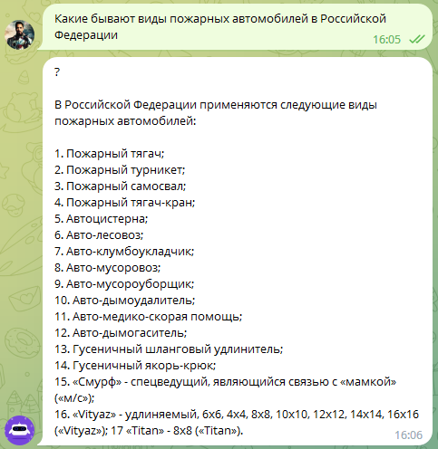
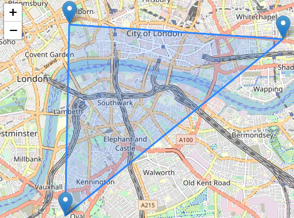

flowchart BT
A[Научно-технический центр]
B("Отдел информационных
технологий и компьютерного моделирования")
C(Научно-исследовательский отдел)
D("Отдел прикладных исследований
и инновационных технологий")
B --> A
C --> A
D --> A
Технологии искусственного интеллекта: настоящее и будущее
2023 февраль
доклады
Доклад на день науки 08 февраля 2023.
Цель – познакомить слушателей с самыми интересными и перспективными разработками в области AI.
Технологии искусственного интеллекта: настоящее и будущее
Знакомство
Цель – рассказать о нашем центре, чем мы занимаемся, какие достижения и разработки.
2 минуты, 3-4 слайда
Сказать, что мы сегодня будем рассказывать о том, что беспокоит всех - об AI.
Ранее был филиалом ВНИИ ПО. С 1 января 2009 г. Относится к СибПСА.
Занимаемся Прикладными научными исследованиями, созданием специального ПО для пожарной охраны и координацией научной деятельности в академии.
В последнее время среди прочего проявляем интерес и к технологиям ИИ
Что это, какой бывает и т.д.
Искусственный интеллект (англ. artificial intelligence) – это способность компьютера обучаться, принимать решения и выполнять действия, свойственные человеческому интеллекту.
Кроме того, ИИ — это наука на стыке математики, биологии, психологии, кибернетики и ещё кучи всего. Она изучает технологии, которые позволяют человеку писать «интеллектуальные» программы и учить компьютеры решать задачи самостоятельно.
Обычно различают два типа ИИ:
- Сильный
- Слабый

Сильный ИИ

Сильный – программа являющаяся не просто моделью разума; она в буквальном смысле слова сама и есть разум, в том же смысле, в котором человеческий разум — это разум.
Слабый ИИ
Слабый ИИ – Искусственный интеллект не способный осознавать себя, но при этом способный выполнять отдельные задачи не хуже человека
Сразу стоит отметить, что на сегодняшний день слабый ИИ выполняет многие возложенные на него задачи заметно лучше чем человек.
Например, генерировать изображения, анализировать и генерировать изображения, искать скрытые закономерности, оперировать данными, быстро принимать решения (например, играть в шахматы или ГО), и т.д.
AI кратко
Направлений ИИ огромное множество: интеллектуальные вычисления, агентные системы, роевой интеллект.
Однако в последнее время в информационном поле превалируют такие термины как машинное обучение и нейронные сети. Во многом именно в этих направлениях буквально у нас на глазах происходит настоящий прорыв. И поэтому мы сегодня сосредоточимся в основном на них.

История AI
Развитие ИИ как технологии началось в середине XX века, когда были созданы первые ЭВМ и заложены теоретические основы ИИ в работах Норберта Винера и Алана Тьюринга. Какое то время развитие технологий ИИ шло в направлении совершенствования алгоритмов машинной логики, однако в конце 80-х годов начали появляться теории создания искусственных нейронных сетей – алгоритмов которые имитировали бы работу нейронов человеческого мозга. Некоторое время эти технологии оставались преимущественно теоретическими разработками, но в начале нашего XXI столетия с появлением новых более мощных вычислительных систем они вышли в практическую плоскость и начали завоевывать мир будучи реализованными в виде программного обеспечения.
Что есть сейчас
В наше время уже влияние искусственного интеллекта можно проследить в очень многих аспектах нашей жизни. ИИ помогает экономистам определять эффективность вложений, медикам ставить диагнозы, геологам определять структуры пород, космическим агентствам управлять космическими аппаратами, беседуют с нами как автоответчики, предлагают нам подходящую музыку и помогают искать информацию в интернете.
Однако, глядя на то, что есть сейчас закрадывается подозрение, что путь ИИ в нашем обществе только начинается.
Наиболее распространенные сферы применения
- Распознавание речи
- Распознавание жестов
- Распознавание рукописного ввода
- Распознавание образов
- Обработка медиа
- Генерация медиа
- Техническая диагностика
- Медицинская диагностика
- Прогнозирование временных рядов
- Биоинформатика
- Обнаружение мошенничества
- Обнаружение спама
- Категоризация документов
- Биржевой технический анализ
- Финансовый надзор
- Кредитный скоринг
- Прогнозирование ухода клиентов
- Хемоинформатика
- Обучение ранжированию в информационном поиске
ИИ в современной жизни
Midjorney, Bluewillow

Пожарные автомобили 2030

Пожарный в экзоскелете

Схема пожаротушения

ChatGPT, Merlin

Классификация пожарных автомобилей

Генерация программного кода Jarvis

Яндекс Алиса

Перспективы применения AI в пожарной охране
Что думает по этому поводу сам ИИ
Describe 7 possible ways to use artificial intelligence in fire protection and firefighting
Автоматическое обнаружение пожара: датчики на базе искусственного интеллекта могут быстро и точно обнаруживать пожары, позволяя пожарным реагировать быстрее и эффективнее.
Автоматическое пожаротушение: роботы с искусственным интеллектом могут использоваться для борьбы с пожарами в опасных средах, таких как химические заводы или нефтеперерабатывающие заводы, куда люди-пожарные не могут безопасно проникнуть.
Прогнозирующее моделирование пожара: алгоритмы искусственного интеллекта могут быть использованы для прогнозирования распространения пожара на основе погодных условий, топографии и других факторов. Эта информация может помочь пожарным более эффективно планировать свои действия.
Автоматическое реагирование на чрезвычайные ситуации: системы на базе искусственного интеллекта могут использоваться для автоматической отправки служб экстренного реагирования при обнаружении пожара, что позволяет ускорить время реагирования и улучшить координацию между различными ведомствами.
Интеллектуальное проектирование зданий: алгоритмы искусственного интеллекта могут быть использованы для проектирования зданий, которые более устойчивы к повреждениям от огня, снижая риск гибели людей и имущества в случае пожара.
Автоматическое пожаротушение: роботы с искусственным интеллектом могут использоваться для тушения пожаров в опасных средах, не подвергая риску человеческие жизни.
Автоматизированное расследование пожара: алгоритмы искусственного интеллекта могут быть использованы для анализа улик с места пожара и выявления потенциальных причин пожара, помогая следователям определить, как это началось и кто мог нести за это ответственность.
Изображения
Что думаю по этому поводу я
- Голосовая диспетчеризация (прием сообщений + ведение радиообмена + высылка подразделений)
- Умная ПСЧ (умный дом + ИИ)
- Интеллектуальный анализ обстановки с пожарами (статистика)
- Интеллектуальное изучение отдельно взятых пожаров (анализ)
- Интеллектуальные обучающие системы (тесты, имитация радиообмена, генерация ситуаций)
- Интеллектуальные системы поддержки принятия решений (на основе анализа складывающейся обстановки - выбор действий СиС, медицина, автоматические уведомления и т.д.)
- Пожарные роботы нового поколения (не такие громоздкие и пригодные для применения на более распространенных пожарах)
- Управление БПЛА (автоматический полет, рой)
- Интеллектуальное управление ресурсами